<!DOCTYPE html>
<html lang="pt-BR">

<head>
    <meta charset="UTF-8">
    <meta http-equiv="X-UA-Compatible" content="IE=edge">
    <meta name="viewport" content="width=device-width, initial-scale=1.0">
    <title>Lumen</title>
    <link rel='stylesheet' type='text/css' href='./css/style.css' />
    <link rel='stylesheet' type='text/css' href='./css/global.css' />
</head>

<body>
    <main>
        <div class="body">
            <div class="main">
                <div class="section">

                    <div class="content-fullwidth-area">
                        <div class="titulo-cap-section">
                            <div class="cap-section">
                                <span class="cap-texto">Capítulo</span>
                                <p class="cap-number">
                                    7
                                </p>
                            </div>
                            <div class="titulo-cap-background">
                                <h1 class="título-cap">
                                    Anelídeos e moluscos
                                </h1>
                            </div>
                        </div>
                        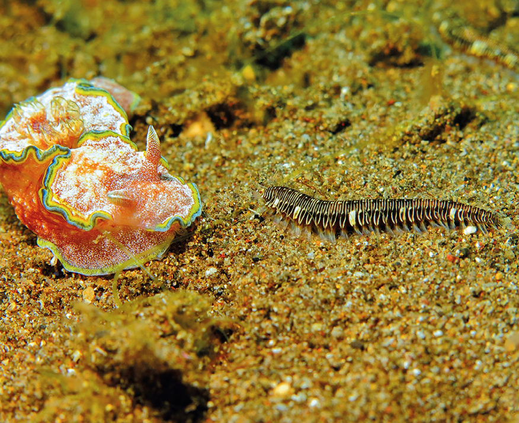
                    </div>

                    <!-- home -->
                    <div class="text-content-area">
                        <p class="img-subtitle">
                        </p>
                        <p class="quote-source">
                            O molusco marinho (à esquerda) pode medir entre 5 e 10 cm e o anelídeo marinho (à direita) chega a atingir até 40 cm de comprimento.
                        </p>
                        <p class="general-text">
                            Ao observarmos a imagem, notamos significativas diferenças entre os membros dos filos Annelida e Mollusca. Os dois grupos que serão estudados neste capítulo apresentam uma grande variedade de estruturas e formas corporais que caracterizam a variedade
                            de adaptações aos diferentes hábitats e modos de vida destes animais. <br> O desenvolvimento embrionário destes dois filos é bastante similar, moluscos e anelídeos apresentam estruturas fisiológicas
                            que desempenham funções parecidas. Esses animais têm grande importância para os seres humanos, desde aplicações na saúde pública até de ordem socioeconômica. Membros destes filos são usados como bioindicadores de poluição;
                            participam do ciclo de vida de parasitas ou são ectoparasitas; têm valor comercial, como as ostras, escargot, lulas e polvos; e minhocas que podem contribuir para a fertilidade do solo, aumentando a produtividade da agricultura.
                        </p>


                        <!-- bullet and boxe-2 -->
                        <div class="text-content-area">
                            <!-- bullet -->
                            <div class="bullet-list-section">
                                <ul class="bullet-list">
                                    <li class="general-text">
                                        Compare as estruturas corporais dos anelídeos e dos moluscos.
                                    </li>
                                    <li class="general-text">
                                        Do que é feita e qual a função da concha dos moluscos?
                                    </li>
                                    <li class="general-text">
                                        De que modo as minhocas se reproduzem?
                                    </li>
                                </ul>
                            </div>
                            <!--boxe-2  -->
                            <div class="boxe-06-02-cie">
                                
                                <p class='chapter-description'> Neste capítulo serão abordadas as habilidades
                                    <span class='boxe-06-texto'>
                                  EM13CNT202
                                </span>
                                </p>
                            </div>
                        </div>

                        <!-- Predicting -->


                        <div class="titulo1-section">
                            
                            <h3 class="titulo1">Filo Annelida</h3>
                        </div>
                        <p class="general-text">
                            Lamarck foi um dos cientistas que se dedicaram ao estudo do filo Annelida. Em 1802, foi ele quem descreveu as características deste táxon e o diferenciou dos “vermes”, representados por membros dos filos platelmintos e nematelmintos, estudados na unidade
                            anterior. <br> Os anelídeos ocupam, praticamente, todos os ambientes em que a disponibilidade de água seja suficiente para sua sobrevivência, visto que são organismos sensíveis à desidratação. Evolutivamente,
                            a distribuição dos anelídeos pelos ambientes aquáticos e terrestre úmido parece ser explicada pela combinação de variedades de estratégias alimentares, podendo haver representantes de hábitos parasitas, comensais ou mutualísticos,
                            com a plasticidade da estrutura corporal que, além do aspecto vermiforme, da presença de três folhetos embrionários e celoma, mostra-se também segmentada. <br> s espécies mais conhecidas deste filo são as minhocas, as sanguessugas
                            e os poliquetas.
                        </p>

                        <h3 class="titulo1">Estrutura geral</h3>
                        <p class="general-text">Uma das principais novidades evolutivas apresentadas pelos anelídeos é a presença de um corpo vermiforme cilíndrico e segmentado. Essa segmentação, também conhecida como metamerização, é associada ao desenvolvimento de uma homologia
                            seriada que possibilita, na maioria desses animais, que os segmentos sejam praticamente idênticos, fenômeno conhecido por metameria homônima. <br> o corpo dos anelídeos a segmentação é evidente tanto na morfologia externa quanto
                            na interna, graças à presença de septos que separam os metâmeros (ou anéis), que modificam o celoma e a disposição interna dos órgãos do animal. Em cada metâmero podem ser encontrados apêndices não articulados compostos de
                            quitina – as <b> cerdas</b> – que auxiliam na locomoção dos anelídeos. Nos poliquetas, são encontrados <b> parapódios</b>, estruturas que abrigam feixes de cerdas quitinosas e contribuem nas trocas gasosas e na proteção do
                            animal. <br> De modo geral, o corpo de um anelídeo pode ser dividido em três regiões: cabeça, corpo segmentado e pigídio (ânus). A estrutura da cabeça é simples e pode abrigar antenas. O corpo do animal é recoberto por uma
                            fina cutícula responsável pela impermeabilização.

                        </p>

                        <h3 class="titulo1">Fisiologia</h3>
                        <p class="general-text">A presença de celoma totalmente revestido pela mesoderme contribui com a locomoção, pois mantém a pressão hidrostática em cada segmento. Graças a essa propriedade, com a contração muscular o corpo pode se dobrar sem se deformar.
                            Além disso, o celoma possibilitou a diversificação da cavidade corpórea, influenciando na fisiologia e no sucesso adaptativo dos anelídeos aos diversos tipos de hábitats.</p>

                        <h4 class="titulo4">Sistema digestório</h4>
                        <p class="general-text">O sistema digestório dos anelídeos é completo e dotado de várias glândulas acessórias, como as glândulas produtoras de veneno, as esofágicas e as produtoras de muco. Uma vez que os anelídeos apresentam hábitos alimentares bastante
                            diversos, as estruturas anexas podem variar. <br> geral, os anelídeos podem ser predadores, depositívoros – ingerindo substrato e digerindo matéria orgânica – ou suspensívoros – seleção de partículas com a geração de correntes
                            de água. Nos anelídeos depositívoros, algumas porções do trato digestório são especializadas no armazenamento de substâncias, como o papo, ou fazem a digestão mecânica das partículas, como a moela.
                        </p>

                        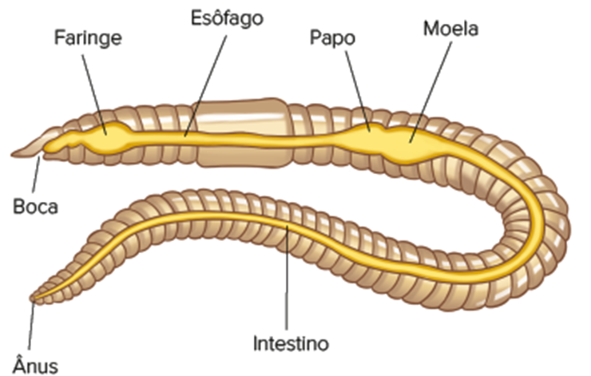
                        <p class="quote-source">BRUSCA, R. C. Invertebrados. 3. ed. Rio de Janeiro: Guanabara Koogan, 2013 <br> Representação esquemática da anatomia geral do sistema digestório de uma minhoca.
                        </p>
                        <p class="general-text">
                            a porção intestinal de alguns anelídeos terrestres, está presente a tiflossole, estrutura que surge como consequência da ampliação da superfície da parede intestinal e que, portanto, garante maior superfície de contato para a absorção de nutrientes.
                        </p>

                        <h4 class="titulo4">Sistema circulatório</h4>
                        <p class="general-text">Diferentemente dos platelmintos e nematelmintos, os anelídeos podem atingir alguns metros de comprimento, o que é consequência da eficiência na distribuição de nutrientes e nas trocas gasosas que ocorrem pelo corpo do animal. <br>                            esse filo, o sistema circulatório é <b> fechado</b> e existem dois vasos principais: um dorsal e outro ventral. Alguns vasos se contraem ritmicamente e garantem o fluxo sanguíneo, sendo chamados de corações laterais. O sangue
                            dos anelídeos é dotado de pigmentos respiratórios que variam de acordo com o modo de vida apresentado pelo animal, e um desses pigmentos é a hemoglobina.
                        </p>
                        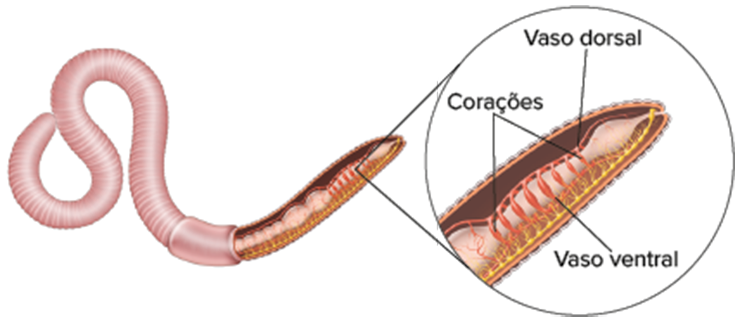
                        <p class="quote-source">Representação esquemática do sistema circulatório dos anelídeos</p>


                        <h4 class="titulo4">Sistema respiratório</h4>
                        <p class="general-text">Ainda que a circulação possibilite o transporte de gases, a presença de estruturas especializadas, como os parapódios e brânquias, em algumas espécies, facilitam o local de ocorrência das trocas gasosas. Em muitos anelídeos essa
                            troca ainda ocorre por difusão, por meio da pele.</p>

                        <h4 class="titulo4">Sistema excretor</h4>
                        <p class="general-text">Distribuídos em pares e em cada segmento do corpo dos anelídeos estão os <b> metanefrídeos</b> , que são as estruturas responsáveis pela filtração e eliminação de substâncias tóxicas geradas pelo metabolismo. <br> O tipo de excreta
                            eliminado pelo anelídeo tem relação com o hábitat em que vive. Por exemplo, em exemplares aquáticos a amônia é o principal produto nitrogenado a ser eliminado, enquanto os representantes terrestres tendem a eliminar ureia.
                            Esses dois compostos nitrogenados (amônia e ureia) são retirados do celoma pela porção ciliada dos metanefrídeos, conhecida como nefróstoma, e eliminadas no ambiente pelos nefridióporos, que se abrem na superfície do corpo.
                        </p>

                        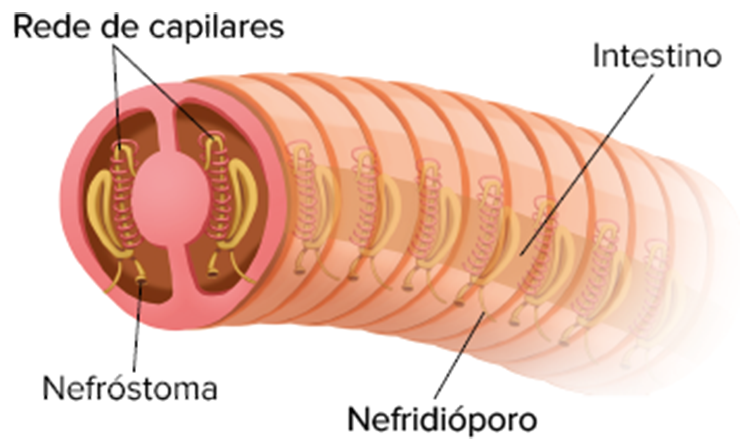
                        <p class="quote-source">Representação da disposição dos metanefrídeos no corpo do anelídeo.</p>

                        <h4 class="titulo4">Sistema nervoso</h4>
                        <p class="general-text"> configuração do sistema nervoso dos anelídeos é também influenciada pelo aparecimento da segmentação. Por toda a extensão do corpo do animal se projetam dois cordões nervosos ventrais e um par de gânglios por segmento, a partir
                            dos quais se projetam nervos para a musculatura circular e longitudinal dos anelídeos e demais regiões do corpo, caracterizando esse sistema como <b>difuso</b>. E, embora haja cefalização, os gânglios cefálicos não coordenam
                            todas as funções do corpo dos animais. <br> Estruturas sensoriais, como ocelos e células especializadas sensíveis à presença de luz, são encontradas em uma grande variedade de anelídeos.</p>

                        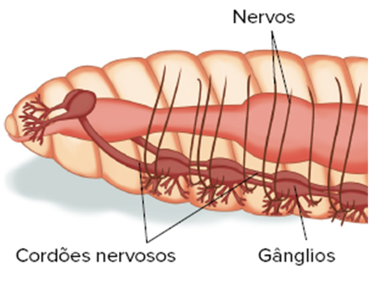
                        <p class="quote-source">Representação da disposição do sistema nervoso dos anelídeos.</p>


                        <div class="leitura-doc">
                            <p class="title">
                                Leitura de documentos
                            </p>
                        </div>

                        <div class="flex-exercicios">
                            <p class="exercicio-text"><b>1</b></p>
                            <p class="exercicio-text"> <b> UFPR</b> Dentre as cerca de 8,5 milhões de espécies de organismos vivos presentes hoje em nosso planeta, mais de 7,5 milhões são animais. Essa enorme diferença em número parece estar vinculada à enorme flexibilidade conferida
                                por características da arquitetura do corpo dos animais, que os tornam aptos a viver nos mais diferentes hábitats do planeta, o que certamente deve ter contribuído para a diversificação do grupo. Dentre as grandes mudanças
                                ocorridas no processo evolutivo, podemos destacar três importantes: aquisição da multicelularidade, aquisição do trato digestivo e aquisição de segmentação corporal. Apresente uma consequência favorável que cada uma dessas
                                mudanças trouxe aos organismos.</p>
                        </div>

                        <h4 class="titulo4">Resolução:</h4>
                        <p class="general-text">quisição de multicelularidade: além de afetar, significativamente, o tamanho do corpo do animal, também influencia na especialização das células para a execução de diferentes atividades. Aquisição de trato digestório: capacita
                            o animal a absorver nutrientes e digerir os nutrientes por um longo período. Aquisição de segmentação corporal: além de favorecer na especialização corpórea, a segmentação corporal em muito influencia na capacidade e forma
                            de locomoção dos animais.</p>


                        <h1 class="titulo1">Classificação</h1>
                        <p class="general-text">Tradicionalmente, os anelídeos são classificados em três classes: Polychaeta, Oligochaeta e Hirudinea. Todavia, pesquisas recentes indicam que os anelídeos sejam agrupados em duas classes principais: Polychaeta e Clitellata. Esta
                            nova classificação taxonômica reconhece que os grupos Oligochaeta e Hirudinea apresentam um ancestral comum e exclusivo, por isso são organizados nesta nova classe.</p>

                        <h4 class="titulo4">Classe Polychaeta</h4>
                        <p class="general-text">omum em ambientes aquáticos marinhos, os poliquetas, como são conhecidos os membros da classe Polychaeta (do latim poli e chaeta, que significam, respectivamente, “muitas” e “cerdas”), também podem ser encontrados em água doce
                            e, raramente, em ambiente terrestre úmido. Esses anelídeos se mostram bastante diversificados e assumem formas de vida livre ou sésseis.</p>

                        <div class="double-columned-content">
                            <!-- left -->
                            <div class="double-columned-content-left">
                                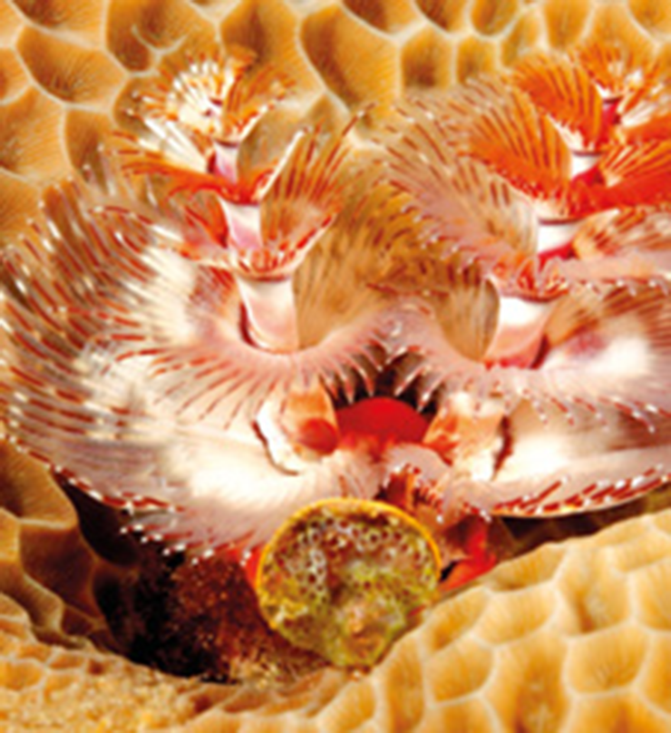
                                <p class="quote-source">Poliqueta marinho séssil que atinge entre 2-3 cm de comprimento.
                                </p>
                            </div>
                            <!-- right -->
                            <div class="double-columned-content-right">
                                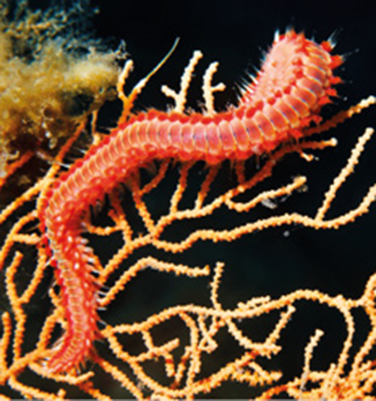
                                <p class="quote-source">Exemplar de poliqueta marinho de vida livre que chega a atingir alguns metros de comprimento.</p>
                            </div>
                        </div>


                        <h4 class="titulo4">Classe Clitellata</h4>
                        <p class="general-text">Na classe Clitellata estão incluídos os grupos Oligochaeta e Hirudínea, representados pelas minhocas e sanguessugas, respectivamente. O termo “Clitellata” se refere à estrutura presente no corpo desses anelídeos, conhecida como
                            <b>clitelo</b>, e que contribui para a reprodução sexuada. </p>

                        <h4 class="titulo4">Hirudínea</h4>
                        <p class="general-text">Popularmente, os hirudíneos são conhecidos como sanguessugas e podem ser encontrados em ambientes aquático marinho, de água doce e terrestre úmido. Eles se caracterizam por serem ectoparasitas hematófagos dotados de ventosas achatadas
                            nas regiões anterior e posterior de seus corpos. Ambas as ventosas contribuem na fixação do anelídeo ao hospedeiro, e apenas a que está disposta na região anterior auxilia na retirada do sangue. <br> pesar dessa capacidade
                            de fixação, os hirudíneos são capazes de se deslocar com o auxílio da musculatura e por meio de um movimento conhecido como mede-palmos.
                        </p>


                        <h1 class="titulo1">Reprodução</h1>
                        <p class="general-text">A reprodução dos anelídeos é bastante diversificada entre os grupos. <br> Em sua maioria, os clitelados são hermafroditas. Na maioria das minhocas, o clitelo se localiza posteriormente às aberturas dos sistemas reprodutores. Durante
                            a cópula, as minhocas se alinham em direções opostas e o clitelo as mantêm nessa posição. Nesse alinhamento, o poro genital masculino de uma minhoca se une ao receptáculo seminal de outra, e vice-versa. Após a liberação dos
                            espermatozoides, os indivíduos se separam, e, em cada um deles, forma-se um casulo, no qual será liberado o óvulo. Esse casulo migra em direção aos receptáculos seminais, possibilitando a fecundação. Em seguida, os casulos
                            contendo os ovos são liberados no ambiente. Após a eclosão dos ovos, os indivíduos jovens são estruturalmente semelhantes ao adulto, portanto não há estágio larval. <br> á os poliquetos são anelídeos dioicos que realizam a
                            fecundação externa. O desenvolvimento é indireto, e, nesse grupo, algumas espécies são capazes de realizar reprodução assexuada.</p>


                        <div class="titulo1-section">
                            
                            <h3 class="titulo1">Filo Mollusca</h3>
                        </div>

                        <p class="general-text">A definição do termo “Mollusca” data de 1650, mas a identificação e a primeira classificação foram realizadas por Aristóteles muito tempo antes. O nome, por sua vez, só passou a ser aceito após a classificação realizada por Lineu,
                            quase cem anos depois de ter sido cunhado. <br>O filo Mollusca (do latim molluscus, que significa “mole”) compreende o segundo maior grupo de animais em número de espécies, ficando atrás somente do grupo dos artrópodes. Esse
                            grupo de animais ocupa uma imensa diversidade de hábitats, sendo encontrados em ambientes aquáticos marinhos e de água doce e também ambientes terrestres úmidos. <br> As classes incluem animais dotados de corpo mole e, por
                            vezes, contendo uma concha calcária. Ao longo deste capítulo vamos estudar as classes Gastropoda, Cephalopoda e Bivalvia.
                        </p>


                        <h4 class="titulo4">Estrutura geral</h4>
                        <p class="general-text">Os moluscos são animais triblásticos, protostômios e celomados, sendo a cavidade celomática reduzida e restrita a algumas regiões do corpo do animal próximas, por exemplo, aos metanefrídeos, gônadas e coração; neste caso, recebendo
                            o nome de cavidade pericárdia. A cavidade principal do corpo dos moluscos recebe o nome de <b> hemocele</b> e é responsável por garantir a circulação e distribuição de substâncias para todo organismo. <br> O corpo dos moluscos
                            é dividido em três regiões: cabeça, massa visceral e pé. Na cabeça, encontram-se estruturas sensoriais, tais como olhos, tentáculos ou estruturas quimiossensoriais, importantes para garantir a percepção do ambiente. O pé dos
                            moluscos é, geralmente, volumoso e constituído por um conjunto de músculos fixados à concha e ao manto. Na região ventral do pé, pode haver glândulas secretoras de muco, importantes para diminuir o atrito e facilitar o deslocamento
                            dos animais sobre uma superfície rugosa.</p>

                        <p class="general-text">Na massa visceral estão os órgãos e uma região denominada manto ou pálio – uma espécie de película que recobre toda a massa visceral e é responsável pela proteção dos órgãos, organização e pela secreção do esqueleto calcário e
                            formação da concha.</p>
                        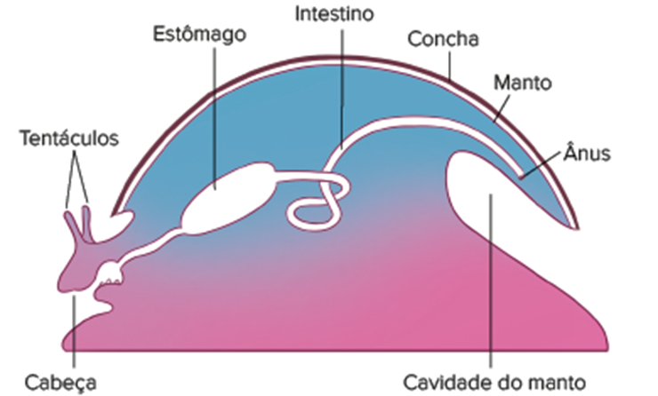
                        <p class="quote-source">Representação esquemática do plano corpóreo de um molusco ancestral, mostrando as principais estruturas internas.</p>

                        <p class="general-text">A concha é constituída de três camadas: a camada mais externa, ou perióstraco, composta de proteínas chamadas de colchiolina; a camada prismática formada, majoritariamente, de carbonato de cálcio secretado pelo manto, e, mais internamente,
                            a camada nacarada, formada por nácar calcário (madrepérola).</p>


                        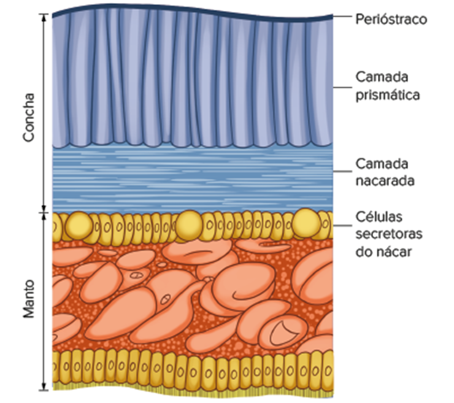
                        <p class="quote-source">Representação esquemática das camadas de uma concha. </p>

                        <h1 class="titulo1">Fisiologia</h1>
                        <p class="general-text"></p>
                        A diversidade de estruturas e sistemas fisiológicos dos moluscos possibilitaram as adaptações destes animais aos diversos ambientes em que vivem. Acredita- -se que os primeiros moluscos teriam habitado os substratos bentônicos dos oceanos e que a presença
                        do pé seria uma característica que possibilitou a locomoção desses animais sobre o apoio do substrato. Mais tarde, estruturas especializadas em jato-propulsão possibilitaram a natação livre na coluna d’água e independência do substrato.


                        <h4 class="titulo4">Sistema digestório</h4>
                        <p class="general-text">Os moluscos se alimentam de pequenas ou grandes partículas disponíveis no ambiente. A grande maioria obtém os nutrientes com o auxílio da <b>rádula,</b> ma espécie de língua raspadora. Em algumas espécies estão presentes mandíbulas
                            capazes de capturar as presas; nesse caso, a boca dá acesso à cavidade oral interna, a qual pode conter a rádula <br> O sistema digestório é <b> completo</b>, e o ânus se localiza na cavidade do manto ou próximo ao fluxo de
                            água exalante. A digestão dos moluscos é extra e intracelular, sendo iniciada no compartimento estomacal e auxiliada por glândulas digestivas dispostas ao longo do trato digestório.
                        </p>

                        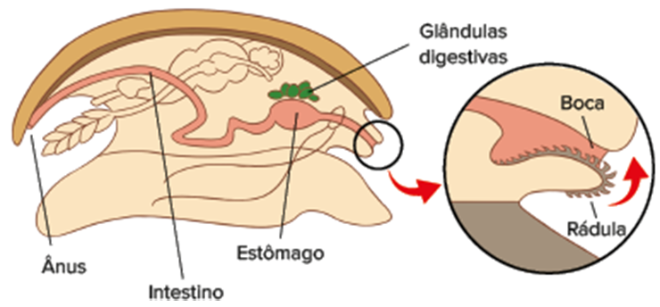
                        <p class="quote-source">Representação esquemática do sistema digestório dos moluscos</p>

                        <h4 class="titulo4">Sistema circulatório</h4>
                        <p class="general-text">O sistema circulatório dos moluscos é aberto e conta com um coração composto de três cavidades, sendo dois átrios e um ventrículo, vasos sanguíneos e hemolinfa, o líquido circulante. <br> Os nutrientes absorvidos são distribuídos
                            para os demais tecidos através do fluxo da hemolinfa, a qual também contribui na realização de trocas gasosas devido à presença de pigmentos transportadores de gases, como a hemocianina. <br> principal exceção de moluscos que
                            não apresentam sistema circulatório aberto são os cefalópodes, cujo sistema circulatório é fechado. Como o sangue dos cefalópodes não deixa os vasos sanguíneos, há maior eficiência nas trocas gasosas e distribuição de nutrientes.
                        </p>

                        <h4 class="titulo4">Sistema respiratório</h4>
                        <p class="general-text">a maioria dos moluscos, as trocas gasosas ocorrem em estruturas branquiais dispostas na cavidade do manto conhecidas como <b> ctenídios.</b> Em alguns, há a dependência da superfície geral do corpo ou da região do manto para que
                            as trocas gasosas aconteçam, e apenas os gastrópodes terrestres são dotados de estrutura pulmonar, altamente vascularizada para a ocorrência dessas trocas.</p>
                        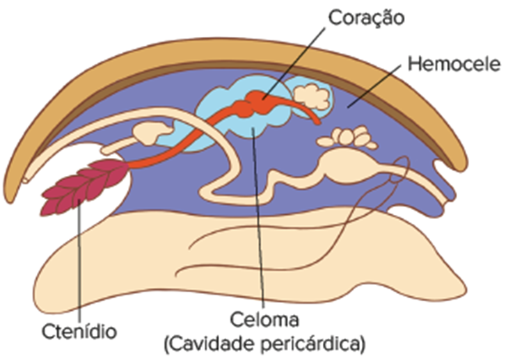

                        <h4 class="titulo4">Sistema excretor</h4>
                        <p class="general-text"> sistema excretor dos moluscos é formado pelos mesmos componentes presentes nos anelídeos, isto é, metanefrídeos que filtram e reabsorvem substâncias antes de as excretas serem eliminadas no ambiente. <br> O produto nitrogenado
                            excretado varia entre os moluscos de acordo com o local em que vivem, sendo que, para as espécies aquáticas, é comum a eliminação de amônia e, para as terrestres, ureia. </p>

                        <h4 class="titulo4">Sistema nervoso</h4>
                        <p class="general-text">De maneira geral, o sistema nervoso desse filo conta com gânglios cerebrais que se reúnem em um anel em volta do esôfago e de onde partem cordões nervosos que se arranjam em forma entrelaçada e se distribuem pela região do pé,
                            nesse caso sendo chamados de pedais, e pelas vísceras e pelo manto, sendo então denominados viscerais.</p>
                        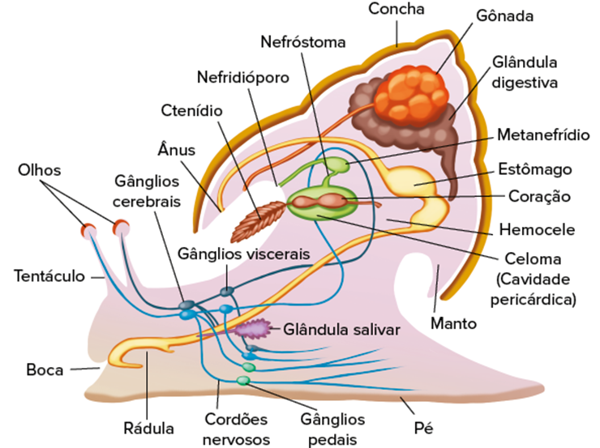
                        <p class="quote-source">Representação dos sistemas respiratório, circulatório, excretor e nervoso.</p>


                        <h1 class="titulo1">Classificação</h1>
                        <p class="general-text">iante da importância que alguns moluscos representam para o ecossistema e também para os seres humanos, neste tópico serão abordadas apenas três principais classes desse filo: Gastropoda, Bivalvia e Cephalopoda.</p>

                        <h4 class="titulo4">Classe Gastropoda</h4>
                        <p class="general-text">A classe Gastropoda (do grego gaster e podos, que significam, respectivamente, “pés” e “ventrais”) é considerada a mais diversa do filo. Todos os representantes apresentam grande habilidade para rastejar. Estão agrupados nessa
                            classe os caramujos, os caracóis e as lesmas. <br> Geralmente, o corpo dos gastrópodes é parcialmente recoberto por uma concha retraída. Entretanto, em alguns representantes, essa estrutura externa se encontra reduzida ou até
                            mesmo ausente. Na porção da cabeça, podem ser encontrados tentáculos e a rádula, caracterizando-os como moluscos raspadores. Tradicionalmente, essa classe se divide em três subclasses: prosobrânquios, que são caramujos marinhos;
                            opistobrânquios, representados pelas lesmas marinhas; e os pulmonados, cujos espécimes mais comuns são lesmas e caracóis terrestres. <br> Trata-se da classe que apresenta maior variedade de formas de reprodução. Os gastrópodes
                            podem ser dioicos ou monoicos, com fecundação interna ou externa. O desenvolvimento do embrião pode ser direto no ambiente aquático ou indireto no interior de ovos.
                        </p>


                        <div class="wrap-collabsible">
                            <input id="collapsible-mat" class="toggle-mat" type="checkbox">
                            <label for="collapsible-mat" class="lbl-toggle-mat">
        <div class="flex-icon">
          
          <p class="collapsible-title">
            Em Historia, vemos que...
          </p>
        </div>
        <div class="flex-icon">
          
          
        </div>
      </label>
                            <div class="collapsible-content-mat">
                                <div class="content-inner">
                                    <div class="text-content-area">
                                        .. em quase toda a costa brasileira, e em algumas regiões do interior, são encontradas estruturas montanhosas compostas de conchas, ossos de animais, lâminas e até esqueletos humanos, conhecidos como sambaquis. O nome deriva do tupi-guarani e significa
                                        amontoado de conchas. Essas formações representam os únicos registros da existência de um povo pré-histórico que viveu na região. Até o momento, as informações obtidas permitem caracterizar um povoado com alimentação
                                        baseada em recursos marinhos, principalmente moluscos bivalves e gastrópodes. E, apesar de pouco se saber sobre esse povo ou mesmo o que os tenha feito desaparecer, acredita-se que uma provável causa tenha sido
                                        o esgotamento de recursos naturais, principalmente os bancos de moluscos. Além de informações sobre a cultura e o próprio povoado, a análise dos sambaquis traz muitas informações sobre as espécies de moluscos que
                                        eram encontradas naquela época.
                                    </div>

                                    <div class="double-columned-content">
                                        <!-- left -->
                                        <div class="double-columned-content-left">
                                            
                                            <p class="img-credit">Ilustração dos sambaquieiros e da formação do sambaqui.</p>
                                        </div>
                                        <!-- right -->
                                        <div class="double-columned-content-right">
                                            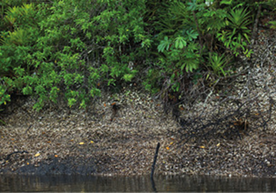
                                            <p class="img-credit">Sambaqui em Cananéia-SP.</p>
                                        </div>
                                    </div>
                                </div>
                            </div>
                        </div>

                        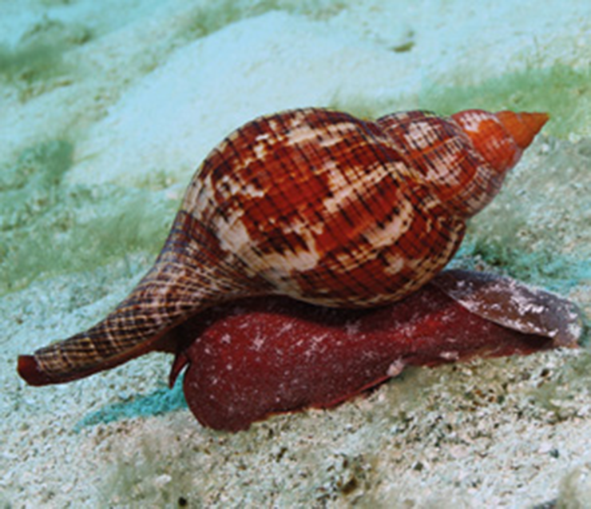
                        <p class="quote-source">Caramujo (cerca de 10 cm de comprimento).
                        </p>

                        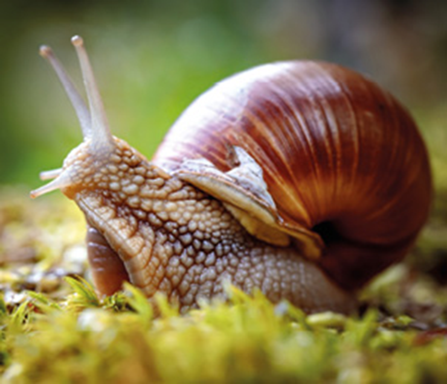
                        <p class="quote-source">Caracol (cerca de 5 cm de comprimento).</p>

                        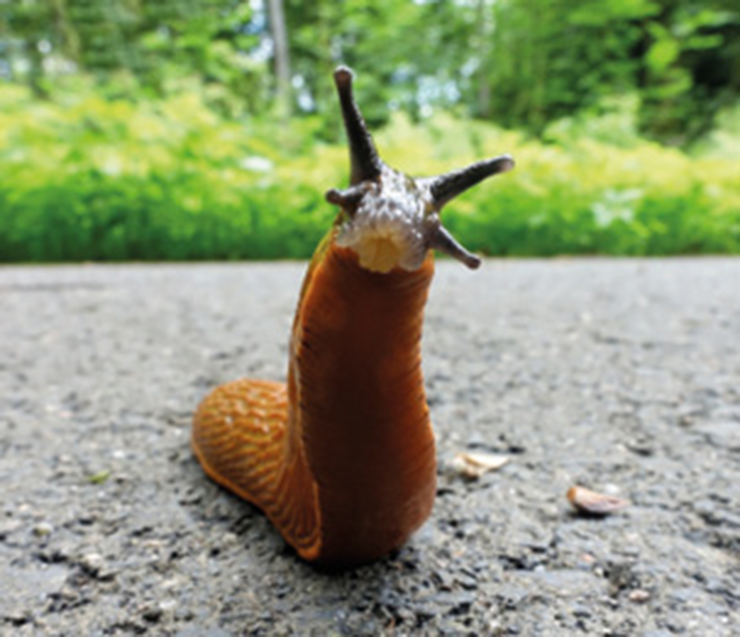
                        <p class="quote-source">sma terrestre (cerca de 10 cm de comprimento).</p>

                        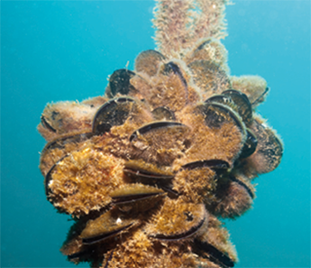
                        <p class="quote-source">Mexilhões (cerca de 8 cm de comprimento).
                        </p>


                        <div>
                            <!-- watch out -->
                            <div class='wrap-collabsible'>
                                <input id='collapsible-his-1' class='toggle-mat' type='checkbox'>
                                <label for='collapsible-his-1' class='lbl-toggle-mat'>
                          <div class='flex-icon'>
                              
                              <p class='collapsible-title'>Fique ligado!</p>
                          </div>
                          <div class='flex-icon'>
                              
                              
                          </div>
                      </label>
                                <div class='collapsible-content-mat'>
                                    <div class='content-inner'>
                                        <div class='text-content-area'>
                                            <p class='general-text'>
                                                <p class='chapter-description general-text'>
                                                    A classe Bivalvia é de grande importância ecológica, pois, além de comporem teias e cadeias alimentares, por causa do hábito alimentar filtrador, esses animais também são usados como bioindicadores da qualidade da água.
                                                </p>
                                        </div>
                                        </p>
                                    </div>
                                </div>
                            </div>
                        </div>


                        <h4 class="titulo4">Classe Bivalvia</h4>
                        <p class="general-text">Os membros pertencentes à classe Bivalvia (do latim bi e valva, que significam, respectivamente, “duas” e ”peças”) possuem a concha formada por duas valvas articuladas e podem ser encontrados em todos os ambientes aquáticos, marinho
                            ou de água doce, sendo sésseis ou livre- -natantes. Os principais representantes são ostras, mexilhões, vieiras, mariscos, entre outros <br> Esses animais contam com a cabeça reduzida e a ausência de rádula e, por isso, dependem
                            de processos de filtração para a obtenção dos nutrientes. <br> Em relação à reprodução, os bivalves podem ser dioicos ou monoicos, e a fecundação pode ocorrer externa ou internamente. O desenvolvimento é indireto com a fase
                            larval, em geral, planctônica.

                        </p>

                        <h4 class="titulo4">Classe Cephalopoda</h4>
                        <p class="general-text">Considerada a mais complexa do filo Mollusca, a classe Cephalopoda (do grego kephale e pous, que significam, respectivamente, “cabeça” e “pés”) é representada por lulas, polvos, náutilos e sibas, todos exclusivos de ambiente aquático
                            marinho. <br> A presença da concha é variável, podendo estar ausente ou localizada na região interna ou externa do corpo do animal. Nesses moluscos, a cefalização é evidente e os pés são modificados em tentáculos que estão
                            dispostos ao redor da boca e auxiliam, entre outras atividades, na captura de presas. Também na região cefálica, nota-se a existência de olhos grandes e complexos, semelhantes aos encontrados em vertebrados. Curiosamente, essas
                            estruturas são capazes de formar imagens no sistema nervoso. <br> Esses animais desenvolveram a capacidade de se locomover de maneira rápida por jato-propulsão. Assim, contam com o auxílio de um funil, ou sifão, originado da
                            modificação do pé que os auxilia a eliminar jatos de água. Além disso, o sistema circulatório é diferenciado em relação aos demais: são os <b> únicos moluscos com sistema circulatório fechado.</b>
                        </p>

                        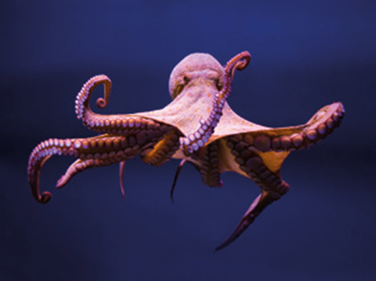
                        <p class="quote-source">Polvo (tamanho pode variar de alguns centímetros até 9 metros de comprimento). </p>


                        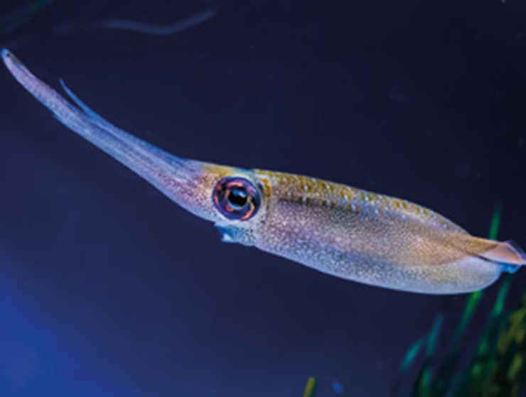
                        <p class="quote-source">Lula (em geral, cerca de 60 cm de comprimento).
                        </p>

                        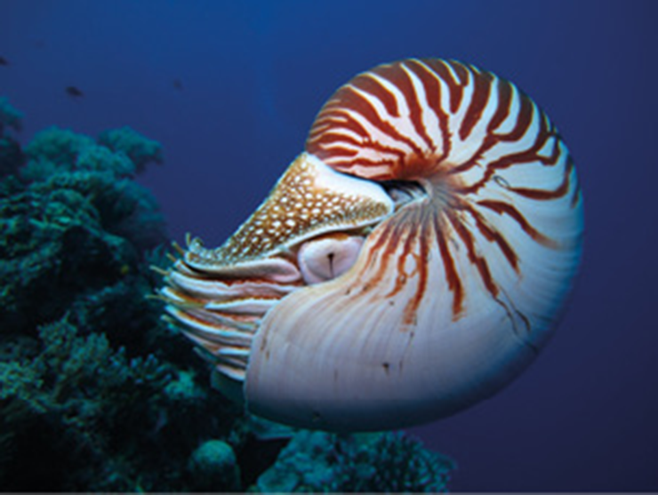
                        <p class="quote-source">Nautilus (cerca de 20 cm de comprimento).
                        </p>


                        <div class=" flex-icon exercicios applying-knowledge">
                             Aplicando conhecimentos
                        </div>


                        <div class="flex-exercicios">
                            <p class="exercicio-text"><b>1</b></p>
                            <p class="exercicio-text"> Quais são as três partes básicas do corpo dos moluscos?</p>
                        </div>
                        <br><br>

                        <div class="flex-exercicios">
                            <p class="exercicio-text"><b>2</b></p>
                            <p class="exercicio-text"> Qual a função da concha nos moluscos?</p>
                        </div>
                        <br><br>

                        <div class="flex-exercicios">
                            <p class="exercicio-text"><b>3</b></p>
                            <p class="exercicio-text">Qual é a novidade adaptativa dos anelídeos que os diferenciam dos vermes em relação à organização corporal?</p>
                        </div>
                        <br><br>


                        <div class="flex-exercicios">
                            <p class="exercicio-text"><b>4</b></p>
                            <p class="exercicio-text"> O que são parapódios?</p>
                        </div>
                        <br><br>


                        <div class="flex-exercicios">
                            <p class="exercicio-text"><b>5</b></p>
                            <p class="exercicio-text"> O que são ctenídios?</p>
                        </div>
                        <br><br>


                        <div class="flex-exercicios">
                            <p class="exercicio-text"><b>6</b></p>
                            <p class="exercicio-text">elação à quantidade de cerdas, explique a classificação dos anelídeos em poliquetos, oligoquetos e aquetos (hirudíneos). Dê um exemplo de animal pertencente a cada uma das classes citadas. </p>
                        </div>
                        <br><br>

                        <div class="flex-exercicios">
                            <p class="exercicio-text"><b>7</b></p>
                            <p class="exercicio-text"> <b> Unicamp-SP 2019</b> Organismos vivos são classificados em grupos taxonômicos, que devem preferencialmente refletir as relações de parentesco evolutivo entre as espécies.</p>
                        </div>
                        <ol class="questao-alternativas" type="a">
                            <li>A tabela apresentada abaixo contém características presentes em anelídeos, platelmintos e moluscos. Preencha corretamente todos os espaços em branco na tabela, referentes às características listadas na primeira coluna, de acordo
                                com as opções indicadas na segunda coluna. Atenção: há duas colunas denominadas X e Y; uma representa moluscos e a outra representa platelmintos.</li>
                        </ol>

                        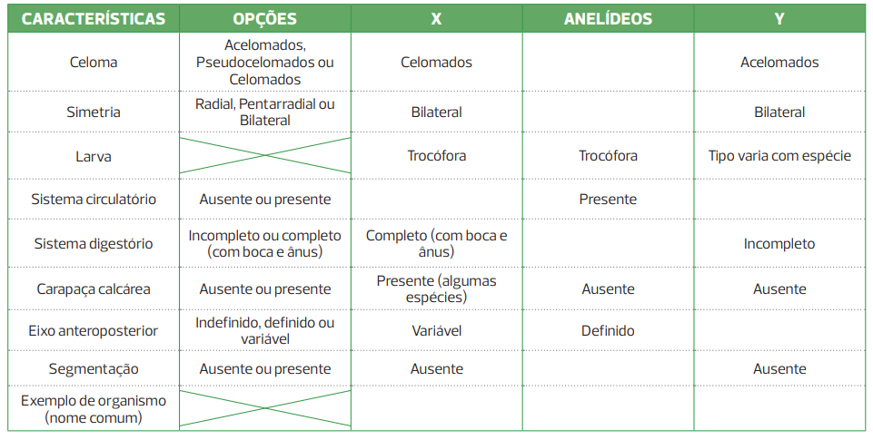

                        <p class="general-text"><b>b)</b> Um dos critérios para a construção do diagrama abaixo é o número de características compartilhadas entre pares de grupos taxonômicos. Preencha os retângulos em branco do diagrama com o nome de um dos dois grupos – moluscos
                            ou platelmintos. Utilize as linhas em branco para explicar o que representa esse tipo de diagrama.
                        </p>
                        


                        <div class='consolidando-saberes'>
                            CONSOLIDANDO SABERES
                        </div>


                        <div class="flex-exercicios">
                            <p class="exercicio-text"><b>1</b></p>
                            <p class="exercicio-text"><b> Uece 2020</b> O corpo dos representantes do filo Mollusca apresenta</p>
                        </div>
                        <div class="flex-exercicios">
                            <ol class="questao-alternativas" type="a">
                                <li> simetria bilateral, cabeça, pé e massa visceral.</li>
                                <li> simetria radial, cabeça, pé e massa visceral.</li>
                                <li> simetria bilateral, cabeça, pé e membros articulados</li>
                                <li> simetria radial, cabeça, pé e membros articulados.</li>
                            </ol>
                        </div>

                        <div class="flex-exercicios">
                            <p class="exercicio-text"><b>2</b></p>
                            <p class="exercicio-text"> <b> Famerp-SP 2019 </b> Os moluscos formam, depois dos artrópodes, o segundo maior filo dos metazoários em números de espécies. São características que ocorrem em todos os representantes dos moluscos:</p>
                        </div>
                        <div class="flex-exercicios">
                            <ol class="questao-alternativas" type="a">
                                <li> sistema nervoso dorsal e cabeça diferenciada.</li>
                                <li> rádula e massa visceral.</li>
                                <li> sistema circulatório aberto e manto.</li>
                                <li> simetria bilateral e mesoderme na fase embrionária.</li>
                                <li> sistema digestório completo e brânquias</li>
                            </ol>
                        </div>


                        <div class="flex-exercicios">
                            <p class="exercicio-text"><b>3</b></p>
                            <p class="exercicio-text"> <b>Unesp 2019 </b> Os microplásticos representam aproximadamente 92,4% da contagem global de partículas de lixo plástico. Estes pequenos plásticos de até 5 mm detamanho estão entrando no ambiente marinho, contaminando um sistema
                                já vulnerável.</p>
                        </div>
                        <p class="quose-source">(www.arocha.org. Adaptado.)</p>
                        <p class="general-text">Os mexilhões estão entre os invertebrados marinhos diretamente afetados pela presença de partículas de microplásticos nas águas, uma vez que, para se alimentarem,
                        </p>
                        <ol class="questao-alternativas" type="a">
                            <li> capturam micropartículas batendo os flagelos dos coanócitos.
                            </li>
                            <li> raspam com a rádula a superfície do substrato marinho.
                            </li>
                            <li> trituram com dentes calcários outros animais menores.
                            </li>
                            <li> filtram partículas de alimento na água circundante.</li>
                            <li> a água pelos canais do sistema ambulacrário.</li>
                        </ol>

                        <div class="flex-exercicios">
                            <p class="exercicio-text"><b>4</b></p>
                            <p class="exercicio-text"> <b> Unicamp-SP 2019</b> Nos quadrinhos a seguir, o personagem Garfield questiona a relevância do animal representado à direita</p>
                        </div>
                        
                        <p class="quote-source">(Disponível em http://www.aprendocomopenomato.wordpress.com/.)</p>
                        <p class="general-text">Assinale a alternativa que descreve corretamente aspectos zoológicos e ecológicos referentes a esse animal.
                        </p>
                        <ol class="questao-alternativas" type="a">
                            <li> minhocas são invertebrados do filo dos anelídeos, possuem corpo celomado e segmentado, convertem detritos ingeridos em matéria orgânica e melhoram o arejamento do solo</li>
                            <li> As cobras-cegas são vertebrados do filo dos anelídeos, possuem corpo pseudocelomado e reprodução sexuada, são predadoras de pragas agrícolas e melhoram o arejamento do solo.</li>
                            <li> As cobras-cegas são invertebrados do filo dos cordados, possuem corpo celomado e não segmentado e são capazes de controlar ervas daninhas, pois consomem suas raízes. </li>
                            <li> minhocas são invertebrados do filo dos anelídeos, possuem pseudoceloma e reprodução assexuada, são predadoras de pragas agrícolas e melhoram o arejamento do solo. </li>
                        </ol>

                        <div class="flex-exercicios">
                            <p class="exercicio-text"><b>5</b></p>
                            <p class="exercicio-text"> <b> Uerj 2017</b> Esponjas e mexilhões podem ser considerados bioindicadores, uma vez que a análise de seus tecidos revela a concentração de poluentes na água. Isso ocorre, pois, no meio aquático, esses animais são caracterizados,
                                em sua maioria, como:</p>
                        </div>
                        <ol class="questao-alternativas" type="a">
                            <li> filtradores.</li>
                            <li> raspadores.</li>
                            <li> predadores.</li>
                            <li> decompositores</li>
                        </ol>


                        <div class="boxe-06-04-cie">
                            <header>
                                <strong>Superação</strong>
                            </header>

                        </div>

                        <div class="flex-exercicios">
                            <p class="exercicio-text"><b>1</b></p>
                            <p class="exercicio-text"> <b> UFPR 2018</b> Animais são eucarióticos, multicelulares e heterotróficos, mas nem todos têm tecidos verdadeiros ou cavidade digestória. Embora não esteja presente em todos os animais, muitos possuem, além da cavidade digestória,
                                uma cavidade celomática ocupada pelos órgãos internos</p>
                        </div>
                        <ol class="questao-alternativas" type="a">
                            <li>onsiderando a formação de gástrula, de cavidade digestória e de tecidos verdadeiros, explique por que as esponjas podem ser classificadas como parazoários.</li>
                            <li> Os platelmintos são acelomados, de modo que a única cavidade corporal é o tubo digestivo. Explique qual é a estratégia desse grupo de animais para distribuir oxigênio e nutrientes para todas as células do corpo</li>
                            <li> Considerando que nematódeos e anelídeos são, respectivamente, pseudocelomados e celomados, explique o que é e qual a importância do esqueleto hidrostático presente nesses grupos.</li>
                        </ol>


                    </div>
                </div>


                <!-- fim -->
            </div>
        </div>
        </div>
    </main>
</body>

</html>